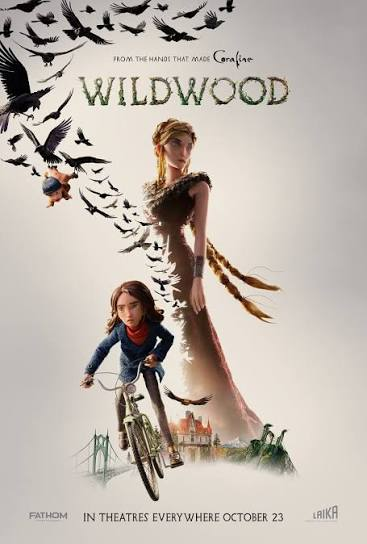

Wildwood (2026)
A Handcrafted Fantasy That Deserves to Be Seen
Director: Travis Knight
Cinematography: Caleb Deschanel
Runtime: 132 minutes
Genre: Animation, Fantasy, Adventure, Action
SPOILER WARNING: This review discusses major plot developments and the ending.
A World Worth Getting Lost In
Wildwood was absolutely beautiful. I don't think there's any other way to start this review.
From the moment the movie began, I was blown away by how incredibly smooth the stop-motion animation looked. The lighting, the colors, the environments, the camera angles, and even the smallest facial movements were phenomenally done. There were moments when I was so busy admiring how everything moved that I may have missed a little dialogue here and there.
That's how impressive it was.
I'll admit, I may be a little biased because I've always had a soft spot for stop-motion animation. There's something special about knowing these characters and environments were physically created and painstakingly brought to life one frame at a time. But I genuinely believe Wildwood speaks for itself. Whether you enjoy the story or not, it's hard to deny what LAIKA accomplished here.
Travis Knight always leaves his mark on the miniature worlds he helps bring to life. Between his work on The Boxtrolls, directing Kubo and the Two Strings, and now Wildwood, there's a visual style that I absolutely love. He's almost like the Wes Anderson of stop-motion animation. Everything feels deliberate, from the framing and colors to the smallest details in the characters' expressions.
And the lighting! These are miniature sets, yet the way they're photographed makes you feel like you're standing in the middle of this enormous, living forest. The backgrounds, depth of field, shadows, and close-up photography work together beautifully. As someone who enjoys photography, I found myself wondering what lenses they were using and how they managed some of those shots.
It's remarkable how convincing this world becomes when you know how much of it was physically built.
A Small Rescue Mission Becomes an Epic Adventure
What surprised me most about Wildwood was just how epic the story became.
The movie begins with a fairly simple premise. Prue's father tells her that her baby brother, Mac, isn't supposed to be taken outside. This warning comes shortly after he tells her about the mysterious forest known as Wildwood.
Naturally, Prue, being a rebellious young girl who doesn't particularly enjoy being told what to do, ignores the warning and takes her brother outside anyway.
Before long, a murder of crows swoops down, abducts Mac, and carries him into the forbidden forest.
And just like that, Prue's decision has consequences she never could have imagined.
Now she's faced with a choice. She can return home without her brother, or she can enter a forest she's been warned to stay away from and try to bring him back.
Naturally, as any good older sibling would, she goes after him.
And I like that motivation. Prue isn't trying to save a kingdom or become some legendary hero. She wants her little brother back. That's it. A simple beginning to an epic adventure.
Curtis, who witnesses Mac being abducted by the crows, has a different reason for following her into the forest. He knows people aren't supposed to enter Wildwood, but he cares about Prue, and I got the impression that he wants to be her knight in shining armor.
He's that awkward teenage boy who wants to prove he isn't scared, even though he's clearly getting himself into something he doesn't understand.
I really enjoyed their dynamic.
Once they enter Wildwood, the story expands into something much bigger. We encounter bandits, talking animals, birds, coyotes, different societies, and political conflicts between the various territories. There's corruption, distrust, and an entire world struggling to find peace.
What began as a girl trying to rescue her brother becomes a massive fantasy adventure with the fate of an entire kingdom hanging in the balance.
And the interesting thing is that Prue never intended to become involved in any of this. She's simply trying to correct a mistake, but every step she takes pulls her deeper into a conflict much bigger than herself.
I wasn't expecting that scale, but I loved it.
Two Characters, Two Different Journeys
One of the things I appreciated about Prue and Curtis is that they don't follow the same character arc.
When they become separated, each is forced to grow in a different way.
Curtis wants to be brave. He wants to be the hero, but wanting to be one and actually becoming one are two different things.
His encounter with Alexandra is particularly interesting. She sees something in him that reminds her of the son she lost, almost treating him as a possible replacement. But when she orders him to kill a wounded enemy, he can't bring himself to do it.
At that moment, you can almost see Alexandra's hopes of Curtis becoming what she expected her son to be disappear. In her eyes, he isn't strong enough, brave enough, or willing to do whatever it takes.
At first, that might look like weakness. But is refusing to kill someone who is already helpless really a weakness?
Later, when Curtis is forced to act to protect Prue, his decisions carry a different meaning. He isn't blindly following orders or trying to impress somebody anymore. He's making a choice because someone he cares about is in danger.
That's character development I can appreciate.
Prue's journey is different.
She's stubborn, impulsive, and convinced she knows what's best. She's growing up, feels restricted by her parents, and doesn't particularly enjoy being told what to do.
Even after entering Wildwood, she repeatedly ignores warnings and pushes forward.
Sometimes that determination helps her. Other times, it makes an already dangerous situation worse.
As Prue continues through Wildwood, I think she begins to realize that her decisions don't just affect her. They affect the people around her, too.
That's really where her journey started in the first place. She ignored her father's warning, took her brother outside, and now he's gone. Her entire adventure is about trying to fix a mess that she helped create.
And even along the way, she continues making decisions without always considering the consequences. She's determined to get her brother back, but I think part of her growth comes from realizing that doing what she wants isn't always the same as doing what's right.
I also like that the movie doesn't suddenly turn her into some great leader or make her responsible for solving every political disagreement in Wildwood.
She encounters people with their own problems, loyalties, and motivations, but those conflicts aren't what brought her into the forest.
She wants her brother.
What changes is her understanding of how much her actions can affect other people.
And that's something I think a lot of us can relate to, especially when we're young. We make decisions because we want something, without always thinking about what those decisions might mean for the people around us.
Prue learns that lesson the hard way.
By the time Prue and Curtis reunite, they've both been forced to confront different aspects of growing up.
Curtis has learned that bravery isn't necessarily about proving how tough you are. Prue has begun to understand that being determined doesn't mean you're free from responsibility for your choices.
They entered the forest together, experienced separate journeys, and came back with a better understanding of themselves.
I thought their character development worked very well.
Alexandra: When Grief Becomes Something Darker
Alexandra was probably the character who gave me the most to think about.
She's a grieving mother who lost her son, Alexei, and has spent years desperately trying to bring him back.
As a parent, I can understand where that pain comes from, even though I've never experienced anything remotely like it. I can't imagine losing one of my children, and I hope I never have to.
When I see parents dealing with terminally ill children, whether it's through St. Jude commercials or stories about families losing their kids, it genuinely gets to me.
I can understand Alexandra's anger, desperation, and inability to let go.
But understanding someone's pain doesn't mean justifying what they do because of it.
There's an interview with Mike Tyson that has stuck with me for years. He was discussing the death of his young daughter and how overwhelmed with anger he became. He described having violent thoughts before arriving at the hospital and realizing that other parents around him were experiencing the same terrible suffering.
That realization changed his perspective.
And I think that's an important distinction when looking at Alexandra.
Her suffering is understandable, but she's willing to inflict that same suffering on another family to get what she wants. She wants her son back so badly that she's prepared to sacrifice someone else's child and potentially destroy an entire kingdom.
There's something tragically selfish about that.
And the story becomes even more interesting when we consider her earlier attempt to bring Alexei back through a mechanical recreation of him.
That raises a question I've always found fascinating in storytelling: just because we have the ability to bring someone back from the dead, does that mean we should?
We've seen similar ideas explored in Pet Sematary and The Monkey's Paw. Even Jurassic Park touches on the same philosophical problem when Ian Malcolm challenges the scientists for being so concerned with what they could accomplish that they failed to consider whether they should.
Alexandra's mechanical son made me wonder whether some part of him recognized that he wasn't meant to exist that way. Almost as though something belonging to the dead had been forced back into a world where it no longer belonged.
That's my interpretation, of course, but it's something the movie made me think about.
At what point does bringing someone back stop being an act of love and become an act of selfishness?
Alexandra isn't trying to bring Alexei back for his sake anymore. She's trying to bring him back because she can't bear the pain of living without him.
That's what makes her such an interesting villain.
And in a way, Alexandra's story creates an interesting contrast with Prue's.
Both characters are driven by their love for someone. Prue wants to save her brother, while Alexandra wants to recover the son she lost.
But where Prue is learning that her choices can hurt other people, Alexandra has allowed her own pain to become more important than the lives of those around her.
That contrast made their conflict more interesting to me.
The Ivy: An Interesting Idea That Left Me With Questions
Now, one part of the story that didn't completely work for me was the magical ivy.
I understand that Alexandra wants to use its power to recover her son's remains, which have been lost in the forest. I also understand that Prue and Mac have a connection to magic because of the bargain their parents made with Alexandra.
And I caught the foreshadowing early in the movie when Prue's blood affects the plant she's been caring for.
But the rules surrounding the ivy and the sacrifice still left me scratching my head.
If Prue's blood can activate the ivy, why does Alexandra need to sacrifice Mac? Is his death necessary for a different part of the ritual? Does Alexandra need his body for something else? And how much do Prue's parents actually know about their children's magical connection?
Maybe some of that was explained in dialogue I missed. I'll admit there were moments when I was distracted by the animation itself, and I was also watching in a theater where interruptions happen.
Like bathroom breaks.
I mean, we've all experienced it. It's just part of the theater experience.
But from my experience watching it, the explanation didn't come together as smoothly as I would have liked.
I also found the ivy's destructive nature interesting because it reminded me of kudzu. If you've ever seen kudzu swallowing trees, buildings, and entire sections of land, you know how intimidating an invasive plant can look.
So I certainly understood why everyone feared the ivy spreading across Wildwood.
I just wish its history, powers, and relationship to Alexandra's ritual had been communicated a little more clearly.
It's not something that ruined the movie for me, but it was one of the few elements that didn't entirely click.
An Epic Battle That Has to Be Seen
Now let's talk about that final battle.
Holy hell, what an accomplishment.
The scale of this thing absolutely blew me away.
You've got armies charging into battle, birds flying overhead, arrows cutting through the air, characters swinging swords, fire, explosions, and all these different creatures fighting across an enormous battlefield.
And the entire time, I'm thinking about how much work must have gone into creating it.
Imagine positioning a puppet, taking a photograph, moving its arm slightly, taking another photograph, adjusting its face, taking another photograph, and repeating that process thousands upon thousands of times.
Then imagine coordinating that with lighting, camera movement, explosions, and an entire battlefield full of characters.
It's insane.
The final battle reportedly runs around twelve minutes and contains 411 shots, representing approximately 3,000 combatants through a combination of practical animation and digital effects.
Director Travis Knight described the sequence as the most complicated LAIKA had attempted, and the production team has discussed his ambition to create something like The Lord of the Rings in stop-motion.
What's funny is that I was already thinking about The Lord of the Rings while watching it.
You can absolutely feel that influence.
Now, was I emotionally worried about Prue and Curtis surviving?
Not particularly.
By that point, I felt fairly confident they were going to make it. These kinds of adventures often follow a familiar structure, and the ending didn't really surprise me.
Personally, I've always appreciated stories where a hero is willing to make the ultimate sacrifice.
I've said before that a true hero never lives to tell the tale because they're willing to sacrifice everything. And I mean everything, including their own life, so others can continue living.
That's the ultimate form of heroism to me.
Had Curtis sacrificed himself to save Prue, or had Prue been forced to give her life for her brother, I think that could have delivered a much stronger emotional punch.
And considering Prue's journey is about taking responsibility for her decisions, a moment where she knowingly puts everything on the line to protect someone else could have brought that development full circle.
I'm not saying every hero has to die, but I enjoy stories that aren't afraid to make their victories cost more than what the average person is willing to pay.
Still, even without that emotional uncertainty, the final battle is one of the most impressive things I've seen in stop-motion animation.
It's an absolute spectacle.
The Work Behind the Magic
I think it's worth taking a moment to appreciate what actually went into making this film.
According to published production coverage, Wildwood involved more than 1,000 artists and craftspeople, including 49 stop-motion animators. The finished movie contains approximately 2,804 shots, with one production account reporting a 231-week production period.
The filmmakers created hundreds of physical puppets and more than a hundred practical sets. One golden-eagle character alone reportedly required around 3,000 hours to create.
Think about that for a moment.
Three thousand hours for one character.
And we're watching the finished movie in just over two hours.
Of course, the production also used CGI, particularly for expanding backgrounds, creating large crowds, removing animation equipment, and enhancing effects that would be extremely difficult to achieve practically.
I don't have a problem with that.
There's a difference between using digital technology to enhance practical filmmaking and allowing it to replace the physical craftsmanship entirely.
And that's what I appreciate about LAIKA.
The costumes, puppets, environments, expressions, and countless physical details are all part of a world that artists spent years bringing to life.
I wish more audiences would support movies like this.
We live in an era dominated by massive blockbuster productions, endless sequels, and CGI-heavy spectacles. I'm not saying those films don't require talented artists or enormous amounts of work, because they absolutely do.
But I want to see more filmmakers taking creative risks and preserving techniques like stop-motion.
There's something special about seeing human craftsmanship on screen.
Knowing the time, patience, and effort that went into Wildwood makes watching it an adventure in itself.
Where the Movie Slows Down
For all my praise, the movie isn't perfect.
There are stretches where the pacing drags, and I think some of the backstory could have been handled more efficiently.
The biggest example for me is the revelation involving Prue's parents and their bargain with Alexandra.
I would have kept the kitchen-table conversation but removed much of the extended flashback.
We didn't necessarily need to see every moment of the parents finding Alexandra and making their agreement.
I think the same information could have been delivered through the conversation itself, allowing the parents' facial expressions, hesitation, guilt, and emotions to carry the weight of what happened.
Sometimes watching a character struggle to explain something painful can be just as effective as showing the entire event.
And considering how well this movie communicates emotion through its animated characters, I think the animators could have 100% trusted that approach.
It would have shortened the sequence, kept the story moving, and still delivered the emotional revelation.
There's also an interesting connection between this revelation and Prue's journey. She's spent the entire movie dealing with the consequences of ignoring her father's warning, only to discover that her parents made a decision years earlier that has consequences of its own.
I like that idea because it shows that adults aren't immune to making decisions that affect other people, either.
But I don't think the movie needed such an extended flashback to communicate it.
That's really my biggest pacing complaint. The movie has an interesting story to tell, but occasionally it spends longer explaining things than I think it needs to.
A Book Series I Now Want to Read
Something else I didn't realize until after watching Wildwood was that it's based on a book that's part of a trilogy called The Wildwood Chronicles, written by Colin Meloy.
I'm a pretty avid reader, especially when it comes to fantasy, so discovering that made me want to pick up the books.
I'm curious to see how much more of this world is explored in the novels, particularly the history of the different kingdoms, Alexandra's motivations, and some of the magical elements that left me with questions.
I may have to add this trilogy to my reading list.
And considering how much I enjoyed the movie, I'd certainly be interested in seeing LAIKA return to this world.
Final Thoughts
Wildwood is a beautiful, ambitious, and genuinely enjoyable fantasy adventure.
I loved the world, the characters, the scale of the story, and the way Travis Knight and the artists at LAIKA brought everything to life.
The story has a few weaknesses. Some sections drag, the magical ivy could have been explained more clearly, and the final battle didn't deliver quite the emotional uncertainty I would have liked.
But those criticisms don't come close to outweigh what I enjoyed.
The character development is strong, particularly in the different journeys Prue and Curtis take.
Curtis discovers that bravery isn't simply about appearing fearless or doing whatever someone expects of him. Prue begins to understand that her actions affect the people around her and that good intentions don't erase the consequences of poor decisions.
And Alexandra provides an interesting contrast to both of them. She's someone whose love and grief have consumed her so completely that she's willing to destroy other lives to get back what she's lost.
Together, their stories explore responsibility, love, sacrifice, grief, and the consequences of our choices.
And visually?
It's phenomenal.
I may be biased toward stop-motion animation, but I believe the craftsmanship here speaks for itself.
This is the kind of movie I want people to go out and support. Not just because it's entertaining, but because films like this remind us how much artistry, imagination, and human effort can go into telling a story.
Whether you love the story or not, I think Wildwood deserves recognition for what it accomplished.
My Rating: 9/10
Reviews from nobodies, for everybody.
Family Thoughts
Fox — 9.5/10
“It was very action-filled. It was really good. It was really beautiful and nature-filled, and I really liked it. It was good.”
Liz — 8.5/10
“It was a really good movie. Character development was nice. It just makes it even more impressive that there was over two hours of stop-motion animation. That's just really impressive.”
Family Average: 9/10
Audience Feedback
Have you seen Wildwood? What did you think of LAIKA's stop-motion animation, the final battle, and Alexandra's story?
Did you find the magical ivy subplot satisfying, or did it leave you with questions?
And if you've read The Wildwood Chronicles, how does the movie compare to the books?
Let us know what you thought.
Nobody Critics — Reviews from nobodies, for everybody.